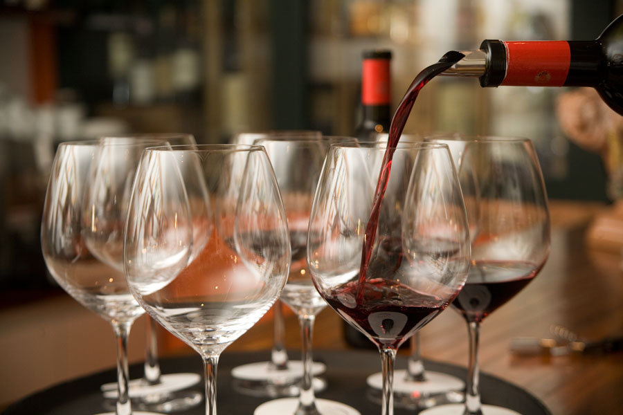

O mercado de vinhos caracteriza-se por sua ampla diversidade e complexidade, envolvendo fatores como tipos de uvas, regiões produtoras, métodos de fermentação e possibilidades de harmonização. Diante desse cenário, o processo de escolha de um vinho pode se tornar desafiador, especialmente para consumidores com menor familiaridade com o produto, o que evidencia a importância de um atendimento especializado no momento da compra.
É nesse contexto que a Vinheria Agnello se destaca, não apenas como um ponto de venda, mas como um ambiente de orientação ao cliente. A empresa construiu sua atuação com base em um modelo de atendimento consultivo, no qual a interação entre vendedores e consumidores desempenha papel fundamental na experiência de compra, contribuindo para decisões mais assertivas e satisfatórias.
Ao longo de sua trajetória, a vinheria consolidou sua presença por meio de uma loja física, mantendo uma relação próxima com seu público e valorizando o contato direto como elemento central de seu diferencial competitivo. Esse modelo, embora eficaz em um contexto tradicional, passa a apresentar limitações diante das mudanças no comportamento do consumidor e do avanço das tecnologias digitais.
A crescente digitalização do comércio, intensificada por eventos recentes que impactaram a circulação de pessoas e o funcionamento de estabelecimentos físicos, trouxe novos desafios para empresas que ainda não possuem presença estruturada no ambiente online. Nesse cenário, torna-se evidente a necessidade de adaptação a novos formatos de interação e consumo.
No caso da Vinheria Agnello, essa transição envolve não apenas a criação de um canal digital, mas também a preocupação em preservar a essência de seu atendimento diferenciado. O desafio consiste em desenvolver uma solução capaz de traduzir, para o ambiente virtual, a experiência personalizada oferecida presencialmente, mantendo o caráter consultivo que define a identidade da empresa.
Dessa forma, o presente projeto propõe a análise do contexto em que a vinheria está inserida, com o objetivo de identificar oportunidades de melhoria e propor o desenvolvimento de uma plataforma digital que una tecnologia, usabilidade e experiência do usuário, contribuindo para a modernização do negócio e para o fortalecimento de sua competitividade no mercado.
